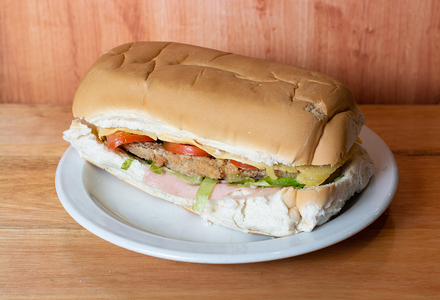

A PAME LE ENCANTA (y a Garfield tambien)

INGREDIENTES:
- JAMON
- QUESO
- MILANESA
- PAN
- EL RESTO DE INGREDIENTES
Como hacer sanguche algoritmo:
- Ver si estan todos los ingredientes. Si falta algo, comprar.
- Cortar pan.
- Poner feta de jamon en uno de los panes.
- Poner feta de queso en uno de los panes.
- Poner milanesa (cocinada).
- Poner otras cosas o no(?
- No se flaco, busca en un sitio real esto es de prueba.
VOLVER A INICIO